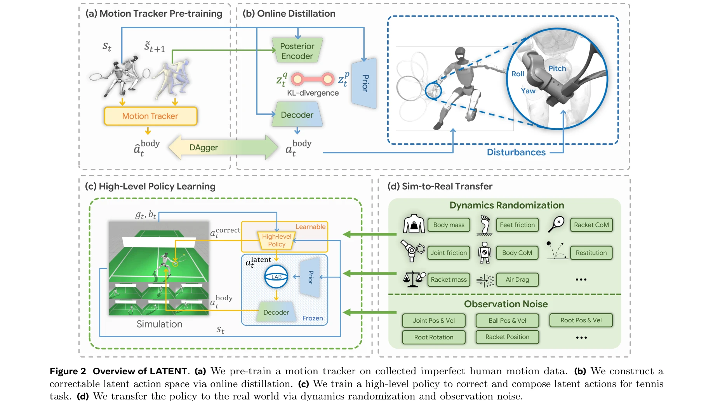
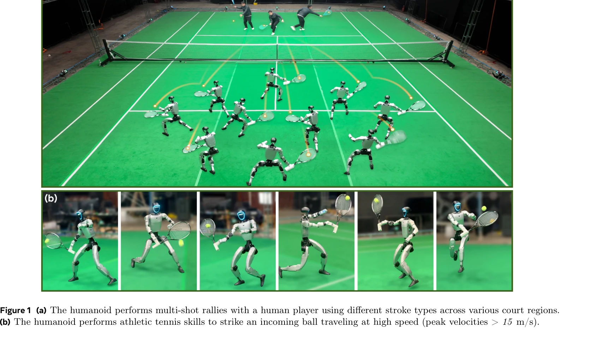

저자: Zhikai Zhang, Haofei Lu, Yunrui Lian, Ziqing Chen, Yun Liu, Chenghuai Lin, Han Xue, Zicheng Zeng, Zekun Qi, Shaolin Zheng, Qing Luan, Jingbo Wang, Junliang Xing, He Wang, Li Yi | 날짜: 2026-03-13 | URL: https://arxiv.org/abs/2603.12686

Figure 2 Overview of LATENT. (a) We pre-train a motion tracker on collected imperfect human motion data. (b) We construc
LATENT는 불완전한 인간 모션 데이터(5시간 분량의 테니스 프리미브)로부터 수정 가능한 잠재 행동 공간을 구성하고, 고수준 정책으로 이를 보정·합성하여 휴머노이드 로봇이 인간과의 멀티샷 테니스 랠리를 수행하도록 학습하는 시스템이다.

Figure 1 (a) The humanoid performs multi-shot rallies with a human player using different stroke types across various co
Figure 2 Overview of LATENT. (a) We pre-train a motion tracker on collected imperfect human motion data. (b) We construc
총평: 본 논문은 불완전한 모션 데이터로부터 athletic humanoid 스포츠 기술을 학습하는 실질적이고 창의적인 시스템을 제시하며, correctable latent space와 latent action barrier라는 두 가지 novel design으로 imperfect data의 한계를 효과적으로 극복했다. Real-world humanoid 로봇에서 인간과의 멀티샷 테니스 랠리를 성공적으로 구현한 점이 이 분야의 중요한 이정표이다.